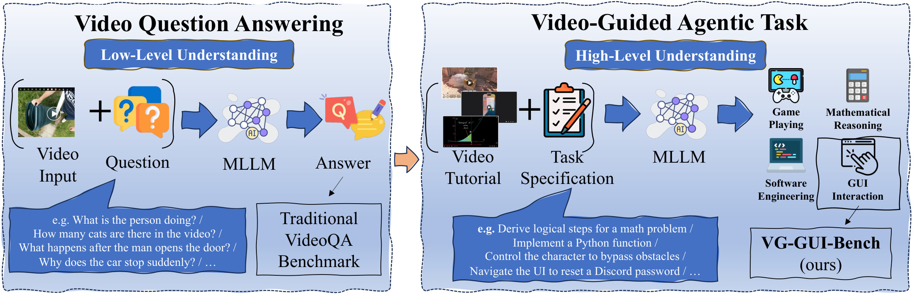
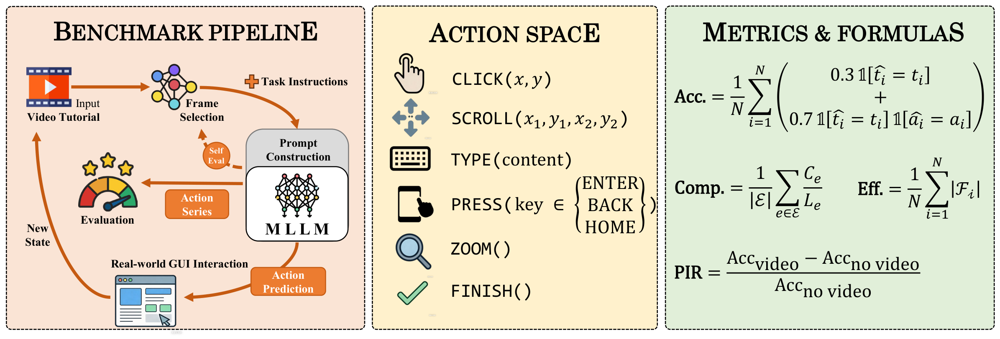
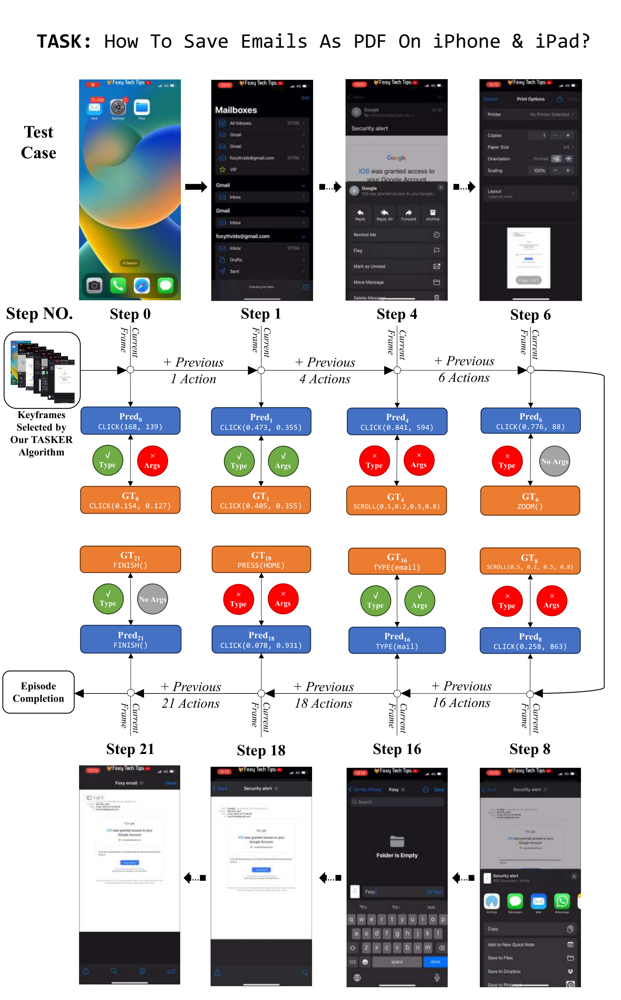
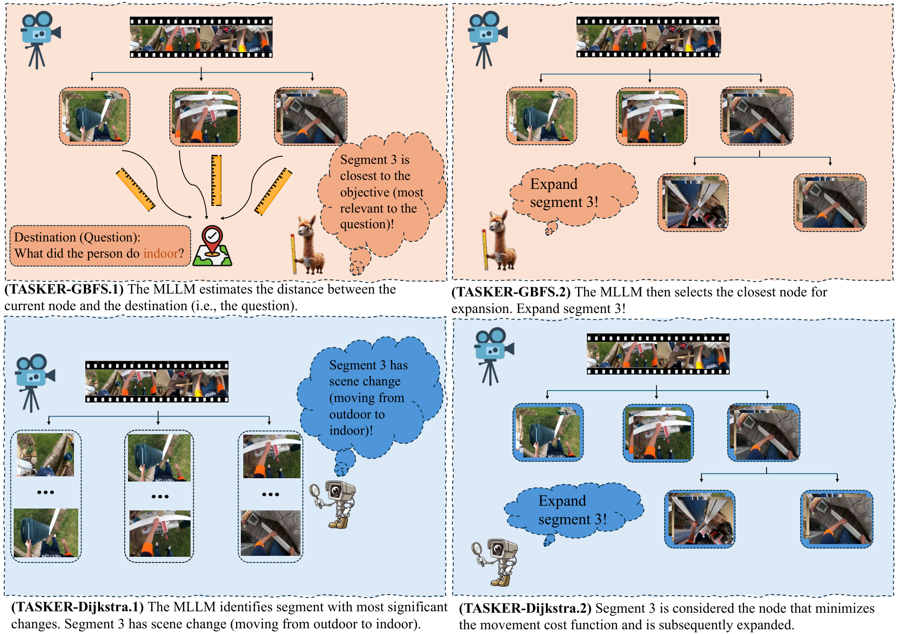
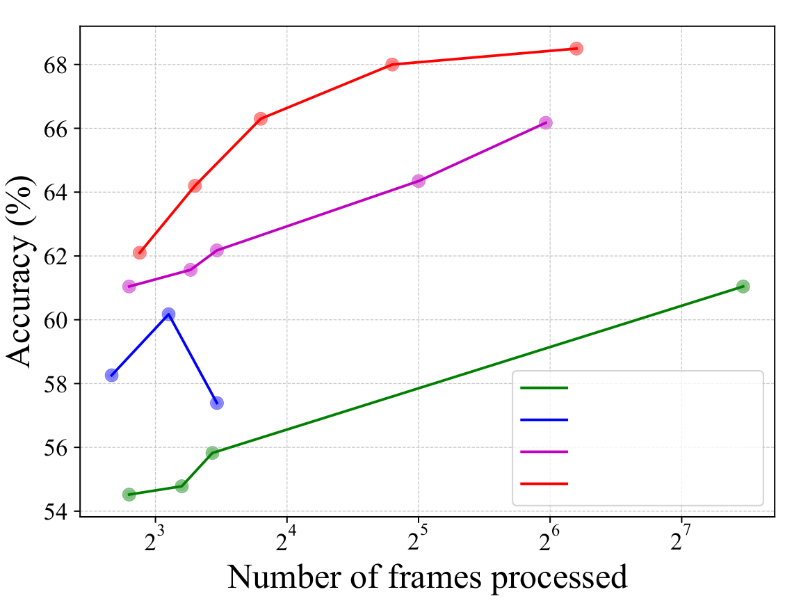
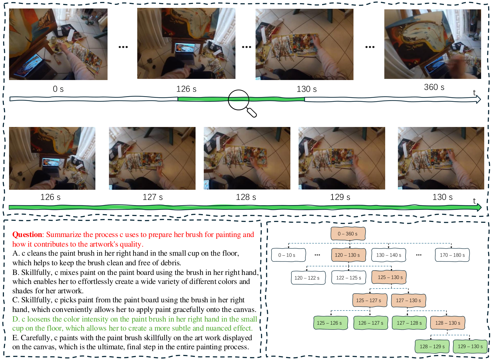

Abstract
Recent Multimodal Large Language Models (MLLMs) achieve remarkable performance on Video Question Answering (VideoQA) benchmarks, but existing benchmarks primarily test shallow visual perception and rarely examine whether MLLMs can learn deeper procedural skills from video tutorials and generalize them to long-horizon agentic tasks. To address this gap, we introduce VG-GUI-Bench (Video-Guided GUI Benchmark), a new benchmark that evaluates whether MLLM-based GUI agents can follow video tutorials to complete corresponding interactive GUI tasks.
We further observe that performance on both VideoQA and video-guided agentic tasks critically depends on effective keyframe extraction. Based on this, we propose TASKER (Task-driven and Scene-aware Keyframe searcher), a keyframe extraction algorithm that jointly considers task relevance and scene dynamics. TASKER yields significant gains on both VideoQA and video-guided agentic benchmarks, outperforming the best baseline by 2.0% on the EgoSchema fullset and 1.8% on NExT-QA, highlighting the potential of generalized keyframe extraction for video understanding.
Contributions
Three key contributions bridging perception and action in video understanding.
A Two-Level Taxonomy
We identify a key limitation of existing video benchmarks and propose a taxonomy connecting low-level VideoQA with high-level video-guided agentic tasks, highlighting the role of video in-context learning.
VG-GUI-Bench
A new benchmark that pairs tutorial videos with GUI agent tasks to evaluate procedural knowledge transfer from videos, with 1,000 long-horizon test cases and four complementary metrics.
TASKER
A task-driven and scene-aware keyframe extraction algorithm, formulated as a generalized graph search, that improves both accuracy and frame efficiency across VideoQA and agentic tasks.
VG-GUI-Bench
A dedicated benchmark for evaluating MLLM-based GUI agents on long-horizon tasks guided by video tutorials, built upon the MONDAY dataset.

Standardized Action Space
| Action | Format | Description |
|---|---|---|
| CLICK | CLICK(x, y) | Tap at coordinate (x, y) |
| SCROLL | SCROLL(x1, y1, x2, y2) | Swipe / drag gesture between two points |
| TYPE | TYPE(content) | Input a text string |
| PRESS | PRESS(key) | System key ∈ {BACK, HOME, ENTER} |
| ZOOM | ZOOM() | Pinch-to-zoom gesture |
| FINISH | FINISH() | Task completed |
Evaluation Metrics
| Metric | Meaning |
|---|---|
| Accuracy | Step correctness: 0.3 for the right action type, +0.7 for the right arguments. |
| Completion | Proportion of correctly executed steps per episode, averaged across episodes. |
| Efficiency | Average number of input frames consumed per prediction step (lower is better). |
| PIR | Performance Improvement Rate — relative accuracy gain from adding the video tutorial. |
Benchmark Case Study

TASKER Algorithm
TASKER reformulates keyframe extraction as a generalized graph-search problem. The video is split into segments (nodes), and an MLLM evaluates cost functions and termination confidence to decide which segments to expand — selecting a compact yet informative set of keyframes.

Task-driven. The MLLM estimates which segment most likely contains the missing goal-critical information, then expands the node closest to the destination (the question).
Scene-aware. Without knowing the question, the MLLM selects the segment with the most significant scene change, prioritizing intrinsic visual structure.
Task-driven & scene-aware. Combines both signals — only segments that are goal-relevant and show large state changes are prioritized.
Naive. A breadth-first variant that requires no MLLM cost evaluation, steadily expanding all segments to avoid overlooking information.
Results on VideoQA
In a training-free, zero-shot setting, TASKER consistently outperforms prior temporal-selection and video-agent methods on EgoSchema and NExT-QA. Gains over VideoTree are shown in green.
| Method | (M)LLM | EgoSchema Sub. | EgoSchema Full | NExT-QA Tem. | NExT-QA Cau. | NExT-QA Des. | NExT-QA Avg. |
|---|---|---|---|---|---|---|---|
| VideoAgent | GPT-4 | 60.2 | 54.1 | 64.5 | 72.7 | 81.1 | 71.3 |
| VideoTree | GPT-4 | 66.2 | 61.1 | 70.6 | 76.5 | 83.9 | 75.6 |
| TASKER (Ours) | GPT-4 | 68.0 +1.8 | 63.1 +2.0 | 72.3 +1.7 | 78.2 +1.7 | 85.4 +1.5 | 77.4 +1.8 |
| TASKER (Ours) | GPT-4o | 68.6 +2.4 | 63.6 +2.5 | 72.9 +2.3 | 79.0 +2.5 | 86.1 +2.2 | 78.1 +2.5 |
| VideoTree | Qwen3-VL | 77.2 | 76.7 | 81.9 | 85.1 | 86.3 | 84.3 |
| TASKER (Ours) | Qwen3-VL | 79.4 +2.2 | 77.3 +0.6 | 83.6 +1.7 | 85.3 +0.2 | 87.5 +1.2 | 85.1 +0.8 |
TASKER outperforms all baselines while using only ~15% of the total frames.

🏆 VG-GUI-Bench Leaderboard
Frontier MLLMs evaluated on VG-GUI-Bench, with no video input vs. 10 uniformly sampled frames. Adding video consistently improves performance, confirming the benefit of temporal visual guidance.
| # | Model | Setting | Acc. (%) | Type Acc. (%) | Comp. (%) | PIR |
|---|---|---|---|---|---|---|
| 1 | Gemini-3.1-Pro | No Video | 58.51 | 74.58 | 78.53 | — |
| 1 | Gemini-3.1-Pro | 10 Uniform Frames | 61.68 | 76.25 | 78.61 | 0.054 |
| 2 | GPT-5-mini | No Video | 55.76 | 71.93 | 75.97 | — |
| 2 | GPT-5-mini | 10 Uniform Frames | 58.40 | 75.27 | 78.96 | 0.047 |
| 3 | Kimi-K2.5 | No Video | 57.22 | 72.91 | 76.31 | — |
| 3 | Kimi-K2.5 | 10 Uniform Frames | 58.22 | 74.78 | 78.72 | 0.017 |
| 4 | Claude-Sonnet-4.6 | No Video | 44.35 | 67.81 | 72.24 | — |
| 4 | Claude-Sonnet-4.6 | 10 Uniform Frames | 45.80 | 67.71 | 72.35 | 0.033 |
| 5 | Seed-2.0-Pro | No Video | 35.93 | 70.66 | 74.75 | — |
| 5 | Seed-2.0-Pro | 10 Uniform Frames | 39.78 | 75.96 | 79.36 | 0.107 |
| 6 | Qwen3-VL-235B-A22B | No Video | 25.90 | 66.63 | 69.73 | — |
| 6 | Qwen3-VL-235B-A22B | 10 Uniform Frames | 26.88 | 67.42 | 71.69 | 0.038 |
| 7 | Gemini-3.1-Flash | No Video | 24.73 | 67.03 | 70.54 | — |
| 7 | Gemini-3.1-Flash | 10 Uniform Frames | 26.02 | 69.19 | 72.60 | 0.052 |
TASKER & Keyframe-Selection Methods on VG-GUI-Bench
All methods use Qwen3-VL-235B-A22B-Instruct as the base LLM. Best results are highlighted.
| Method | Acc. (%) | Type Acc. (%) | Comp. (%) | Eff. ↓ | PIR |
|---|---|---|---|---|---|
| No Video | 25.32 | 65.85 | 69.03 | 0 | — |
| Uniform Sampling | 39.82 | 66.34 | 70.64 | 10.88 | 0.573 |
| Oracle Keyframes | 44.32 | 73.31 | 76.32 | 1 | 0.750 |
| VideoTree | 40.79 | 67.52 | 71.93 | 10.00 | 0.611 |
| VideoAgent | 39.86 | 67.03 | 71.17 | 5.12 | 0.574 |
| TASKER-Dijkstra | 40.75 | 71.05 | 74.39 | 5.88 | 0.609 |
| TASKER-A* | 40.96 | 67.71 | 71.38 | 8.24 | 0.618 |
TASKER-A* attains the highest overall accuracy and PIR, surpassing the strong VideoTree baseline, while TASKER-Dijkstra approaches the Oracle Keyframe upper bound on task completion.
Search Visualization
A case study of TASKER solving a VideoQA example from EgoSchema. The key information lies between 126s–130s; TASKER traverses the video tree (yellow path) and converges to the correct keyframes (green leaf).

BibTeX
@inproceedings{fan2026bridging,
title = {Bridging VideoQA and Video-Guided Agentic Tasks
via Generalized Keyframe Extraction},
author = {Fan, Sunqi and Liu, Qingle and Yin, Runqi and
Guo, Meng-Hao and Yang, Shuojin},
booktitle = {European Conference on Computer Vision (ECCV)},
year = {2026}
}